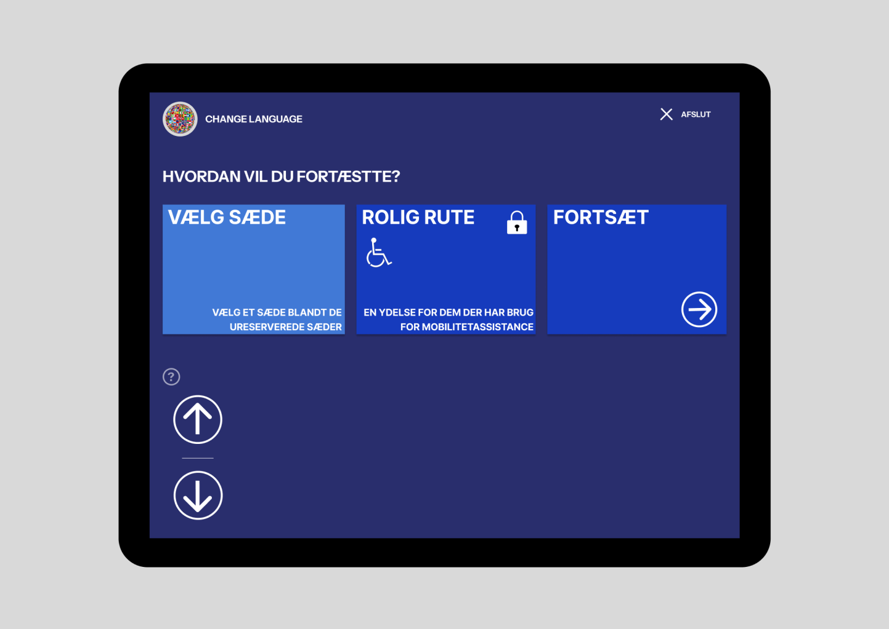
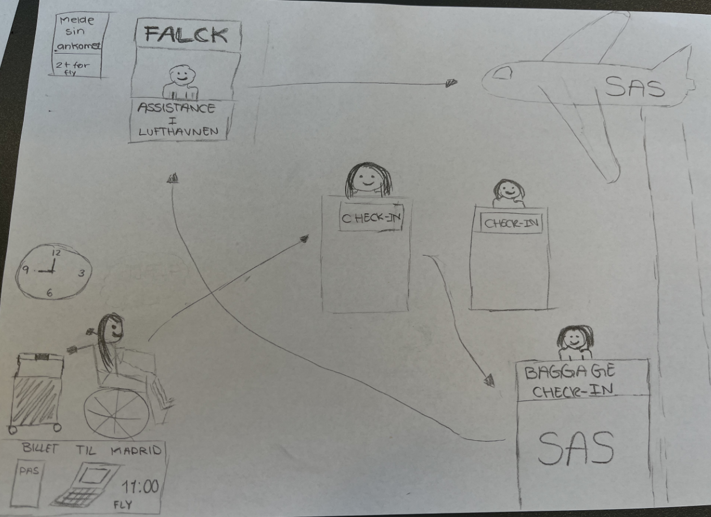
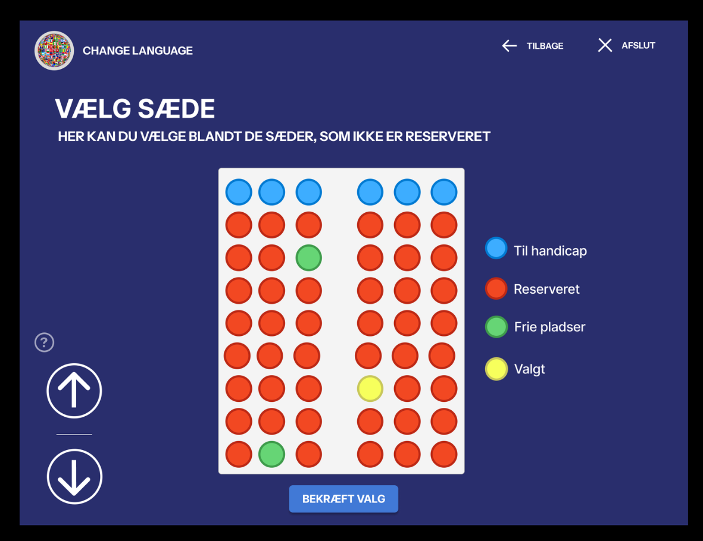

Lufthvan

Opgaven
Opgaven gik ud på at Re-design af lufthavn check-in stander og gøre dem brugere venlige til kørestolsbruger
Processen
Vi research hvordan man som kørestolsbruger skal bestelle og infomere vedrøgerne deres kørestol. Vi to ud til kbh lufthavn for at lave noget field research og snakkede blantandet med falck da de hjelper blantandet kørestolsbruger hvis de har brug for hjælp med check-in standeren, der efter begynte vi at konceptudvikling, hvor vi brianstormet fortsatte researchen og lavede en prototype.
Resultatet
Projeket ende med en figma prototype

